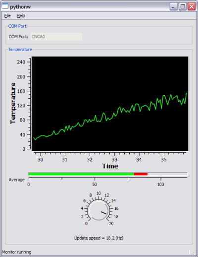

The previous couple of posts about the PySerial module for serial communications with Python were just a basic introduction. Let's now see something much more useful.
PySerial makes Python a great tool for serial communications from a computer, as it can be easily combined with other powerful Python libraries to create full-scale applications. In my case, I'm using PyQt with its plotting supplementary PyQwt to create nice "live" plotting applications, that can be combined with the serial port. Here's a demo:
Download plotting_data_monitor- it's a small demo application written in Python that requires the following modules to be installed on your machine:
- PyQt
- PyQwt
- PySerial
What does it do? Well, it basically shows how to combine all these powers of Python into a single application in a simple way. You can choose a serial port and then run the monitor (all via the menu). If another program is sending data to the specified port, you'll see the plot updating "in real time":
If you have nothing sending data to your machine, no worries. If you've installed com0com or a similar virtual port emulator like I explained here, configure it to connect two ports together.
Then, download sender_sim.py which is a very simple data-sending script (the data it provides is a pleasant pseudo-randomized sinusoid). You may want to change the port name hard-coded in it, if your port numbers are different.
When both this sender and the monitor run on the same machine, you'll be able to see the live plotting. Note that I've added a couple of extra features from PyQwt:
- A "thermo" bar that shows the average temperature
- A knob that sets how often the monitor updates the screen
These widgets, and a few others, make PyQwt quite a nice library for emulating Labview-type "lab control" applications in Python. I recommend it highly.
How does it work
The monitor is a toy demo, but it's based on a few powerful tools I use for real applications. For example, the serial communication itself is performed in a separate thread (in the com_monitor module). The thread issues blocking reads on the serial port in a loop, and communicates the data to the GUI via a Queue (together with an accurate timestamp for every data chunk received). This is a robust and safe implementation that can be used for many kinds of GUI-based monitoring applications.
The GUI itself is updated using a periodic timer (QTimer) that runs whenever the monitor is running. The timer event handler checks whether new data has arrived from the monitor and updates the display widgets accordingly.
The rest of the code is your usual PyQt bureaucracy - creating the menu, the status bar, the GUI widgets, laying everything out nicely and connecting events.
I hope people will find this code useful. If you have trouble running it or understanding how it works, let me know. I recommend using the latest Python 2.6 versions of all the required modules. I checked it only on Windows, but there's no reason whatsoever for it not to run on other OSes out of the box.